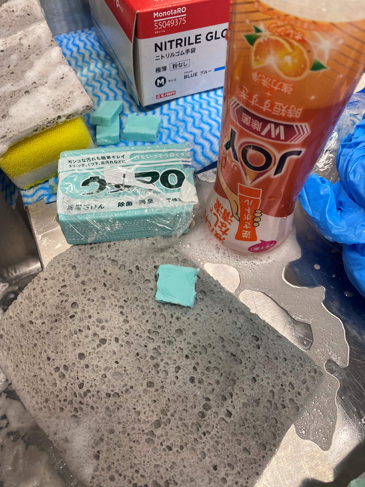
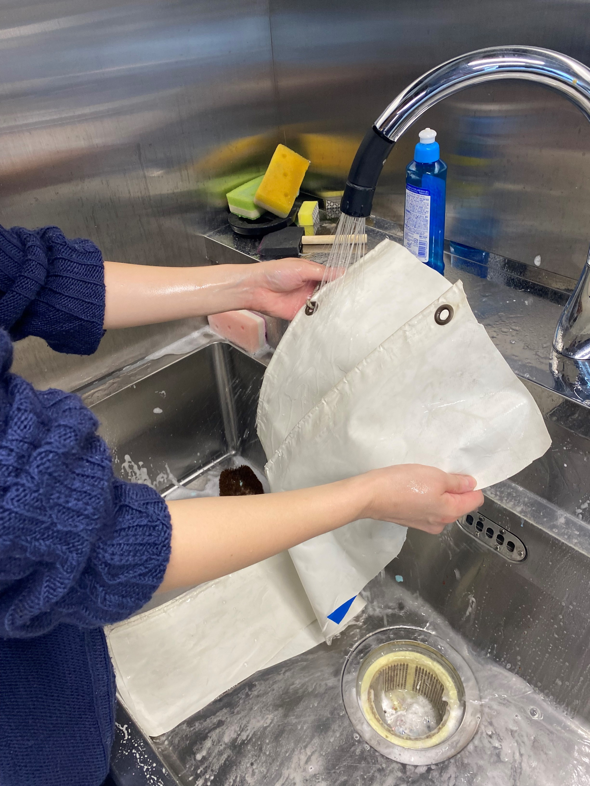
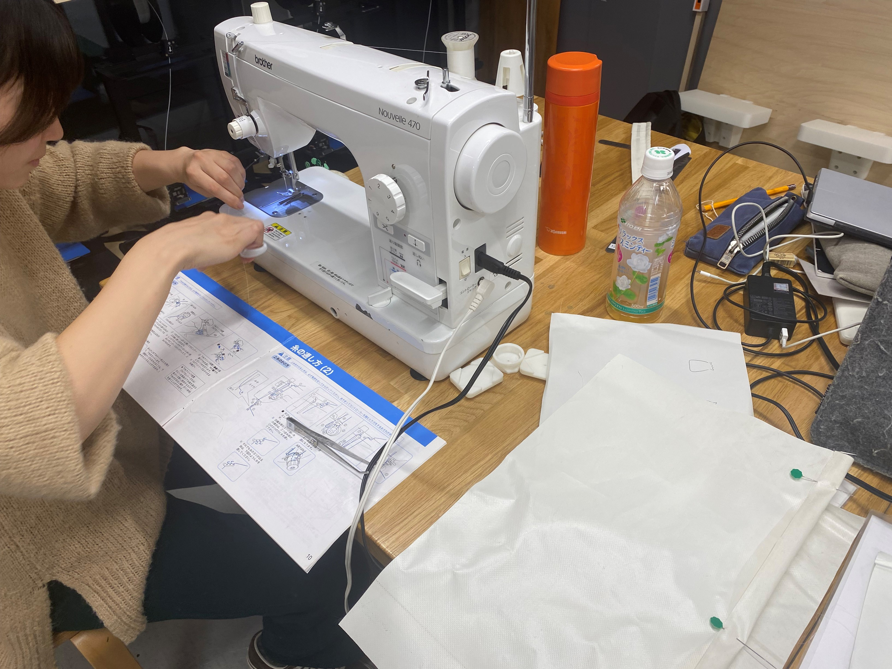
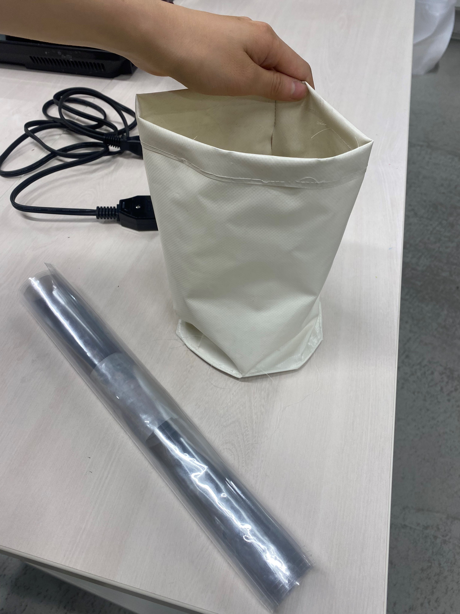

ターポリン(repurpose)
このプロジェクトは服部と協同で進める予定です。
捨てられるはずの横断幕などに使われる素材、ターポリンをバックや小物に変え、最終的に
sdgsawardに出せたらいいなと思います。
洗い


まずはリメイクする前にある程度汚れを取ります
JOY→ウタマロでごしごしが一番取れやすかった！スポンジはラボにある鼠色のやつが汚れ落ちやすいみたいです
準備・制作
底が円形の巾着袋のようなバックを目指す。周りにスポーツバックで使われるような
透明な素材を付けたら良いかもということで、ユザワヤでそれに似あいそうなテーブルシートも購入しました。


ターポリンは伸縮性がないため、複雑な縫いはかなり難しかく、一度手縫いで形を整える必要がありそう。
入り口に紐を通すイメージだったが、これほどの硬さなら、丸い金具でくりぬいて紐を通す形にしてもよさそう
次回
底に強度を付けるため、今回は厚紙を急遽入れてみたが、専用の厚紙を探してみる
周りのデザインを作り、UV後のターポリンで制作したい。